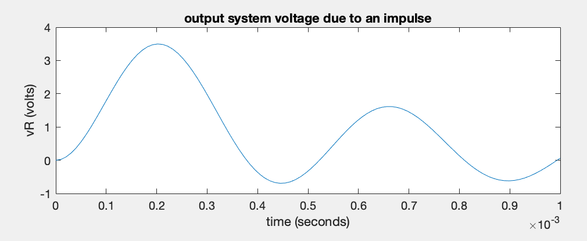

In general, the relationship of the currents and voltages
in an AC circuit are described by linear constant coefficient
ordinary differential equations (LCCODEs). But if only the
steady state behavior of circuit is of interested, the circuit
can be described by linear algebraic equations in the s-domain
by Laplace transform method.
Example: A low-pass filter composed of two inductors  and a capacitor
and a capacitor  is inserted between the power supply and the
appliance modeled by resistor
is inserted between the power supply and the
appliance modeled by resistor  to filter out possible spikes
(due to surges in the power line or lightning). Such spikes can
be modeled as a square impulse of certain height, e.g.,
Volt and certain duration, e.g.,
, which
can be mathematically represented by a delta function as the input
, and we want to find out the output voltage
across the load resistor as the response to the impulse
input.
to filter out possible spikes
(due to surges in the power line or lightning). Such spikes can
be modeled as a square impulse of certain height, e.g.,
Volt and certain duration, e.g.,
, which
can be mathematically represented by a delta function as the input
, and we want to find out the output voltage
across the load resistor as the response to the impulse
input.

Time domain: We use node-voltage method applied
to the middle node and the output node :
KCL to node  :
, where
:
, where
KCL to node :
, where
These differential equations can be combined to for a first
order differential equation system:
This first order ODE system can be written in generic form:
with a general solution:
Given the zero initial condition
and an
input
, we can get
where
with
and
being the eigenvalue
and eigenvector matrices of satisfying
, i.e.,
.

s-domain:
Solving the second equation for , we get
Substituting into the first equation, we get
Solving for we get
and
The voltage
can be found
by inverse Laplace transform.